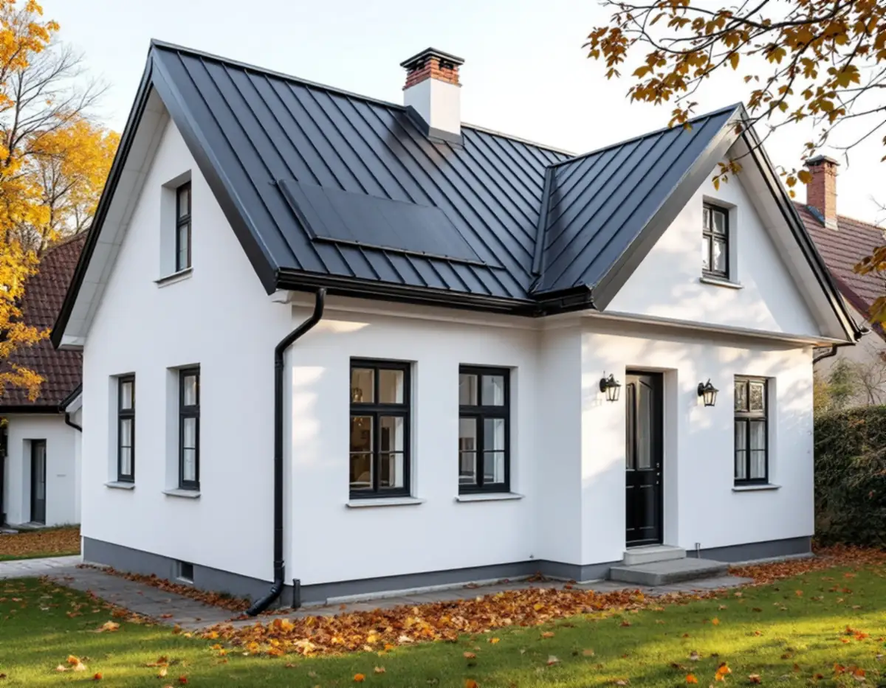
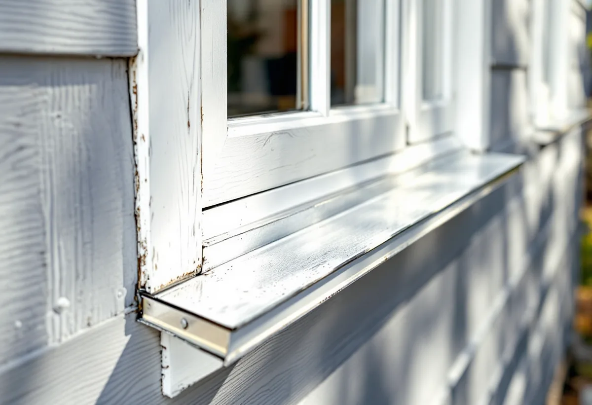

Platsbesök
Vi går igenom tak, rännor, bleck och beslag och letar efter var vattnet faktiskt tar vägen.
Plåten på ett hus sitter där vattnet tar sig in om något är fel: i falsar, ränndalar, runt skorstenen, under fönstren och längs takfoten. Geal Entreprenad AB har egna plåtslagare och tar hand om allt från ett läckande skorstensbeslag till ett nytt plåttak, med gratis platsbesök, skriftligt kostnadsförslag och ROT-avdraget direkt på fakturan.

En plåtslagare arbetar sällan bara med taket. På en villa handlar uppdraget lika ofta om detaljerna som binder ihop tak och vägg: fotplåt och vindskivor, ränndalar mellan två takfall, beslag kring skorsten och ventilationshuvar, fönsterbleck och sockelplåt. De är små ytor, men de leder bort vatten från de mest utsatta punkterna i klimatskalet.
Vi delar in arbetet i fem områden. Plåttaket som helhet, takavvattningen med hängrännor och stuprör, fönsterbleck och andra fasadbleck, beslagen kring skorstenen och plåt som fasadmaterial. Samma hantverk ligger bakom alla fem – att bocka, falsa och fästa plåt så att den rör sig med temperaturen utan att släppa in vatten.
Varje område har en egen fördjupning på sajten, och här samlar vi det som binder ihop dem: hur skadorna hänger samman, vad lagen säger om materialbyten och vad som ger rotavdrag.

Ett plåttak läggs antingen som bandtäckning med falsade skarvar eller som profilerade skivor som skruvas fast. Skillnaderna mellan metoderna, och när taket kan tätas i stället för att bytas, går vi igenom på sidan om plåttak och i artikeln om falsat plåttak och bandtäckning. Ska ett befintligt plåttak få nytt ytskikt finns mer under måla plåttak.
Även ett tegel- eller betongpannetak är beroende av plåt. Ränndalen mellan två takfall, fotplåten som leder vattnet ner i rännan och nockens avslutning är plåtarbeten, och på ett äldre tak är det ofta de som har gett upp först. Därför ser vi över plåtdetaljerna vid varje takbesiktning och föreslår åtgärder del för del.
Vid ett takbyte görs plåtarbetet om i samma etapp, eftersom ställningen redan står. Gäller det bara en ränndal eller en takfot kan det ofta göras separat med en mindre ställning.
Hängrännor och stuprör ska ta emot allt vatten som rinner av taket och lämna det på rätt ställe. När rännan lutar fel, skarvarna glappar eller rören är igensatta rinner vattnet längs fasaden eller ner mot grunden. Rensning, byte och justering beskriver vi på sidan om hängrännor och stuprör.
Kommunerna har dessutom åsikter om vart vattnet tar vägen. Huddinge kommun beskriver i sin dagvattenbroschyr hur stuprör kan förses med utkastare och ränndalsplattor, och att utkastaren bör vara minst 20 centimeter lång för att undvika vattenstänk på fasaden. Närmast huset bör marken luta minst 1:20 på en sträcka av minst tre meter, och vattnet får inte ledas ut på gatan eller till grannen. Vilka regler som gäller där du bor avgörs av detaljplanen och VA-huvudmannen.
Avvattningen hänger också ihop med vintern. Smältvatten som fryser i rännan bildar istappar och kan trycka isen bakåt in under fotplåten. Mer om det under istappar och isbildning.
Boverket räknar bleckens lutning och om blecken inte sluter tätt mot väggen till de faktorer som avgör risken för fuktskador vid fönster och dörrar. Myndigheten pekar också på att det ska finnas en dränerande och ventilerande spalt under fönsterblecket, så att vatten som ändå tar sig in kan torka ut. Ett nytt bleck mäts därför upp efter fönstret och fasaden och bockas med uppvik mot karmen och en droppkant som släpper vattnet utanför väggen. Byts fönstren samtidigt, se fönsterbyte.
Kring skorstenen möts murverk och tak, och rörelserna mellan dem gör beslaget till en av takets vanligaste läckpunkter. Intäckningen ska ha rätt överlapp mot pannorna och en anslutning mot murverket som tål att skorstenen och taket rör sig olika. Hur beslag och murning åtgärdas beskriver vi i skorstensrenovering och skorstensbeslag.
Plåt används även som fasadbeklädnad, till exempel på tillbyggnader, garage och kring kupor. Enligt Boverket är byte till ett annat material på fasad eller tak – som från tegeltak till plåttak eller från puts till panel – en fasadändring. Att byta mot samma material och utförande räknas däremot som underhåll.
Sedan 1 december 2025 krävs inget bygglov för fasadändringar på en- och tvåbostadshus. Undantagen är byggnader och områden som är särskilt värdefulla, hus med skyddsbestämmelser i detaljplan eller områdesbestämmelser och planer med utökad lovplikt. På andra byggnader, som flerbostadshus, krävs fortfarande lov inom detaljplan när ändringen görs på en fasad eller ett tak mot allmän plats. Läs mer i bygglov vid takbyte.
Materialet påverkar också dagvattnet. Huddinge kommun råder villaägare att vid om- och nybyggnad välja tak- och fasadmaterial som inte förorenar dagvattnet, och nämner kopparbleck och omålade zinkytor som exempel att undvika. På ett hus där koppar är en del av originalet kan det ändå vara rätt att fortsätta i koppar, och det reder vi ut med kommunen innan materialet beställs.
Vi går igenom tak, rännor, bleck och beslag och letar efter var vattnet faktiskt tar vägen.
Vi kontrollerar om huset ligger i ett värdefullt område och om materialvalet kräver lov.
Varje del – tak, avvattning, bleck och beslag – prissätts för sig så att du kan välja.
Bleck och beslag mäts upp på plats och bockas efter huset, inte efter standardmått.
Plåten fästs så att den kan röra sig med temperaturen, med täta skarvar och rätt överlapp.
Vi går igenom avvattningen tillsammans och tar med oss allt överblivet material.
Skatteverket räknar det som rotarbete i ett småhus att reparera, rengöra eller byta ut plåttak, hängrännor och stuprör, att byta och reparera fönsterbleck, att mura och reparera skorstenar och att montera och montera ner byggnadsställningar i samband med rotarbetet. Avdraget är högst 30 procent av arbetskostnaden, högst 50 000 kronor per person och år och högst 75 000 kronor tillsammans med rutavdrag. Material och resekostnader ger inget avdrag.
I en bostadsrätt ger plåt- och glasarbeten utanför den egna bostaden inte rotavdrag. Geal drar avdraget direkt på fakturan.
Hur mycket plåt som byts, om detaljerna kan bockas av standardplåt eller behöver tillverkas efter förlaga, vilket material och vilken kulör som väljs, hur många genomföringar och kupor taket har och hur hög ställning som krävs. Ett arbete som görs samtidigt med ett takbyte delar ställning med det. Efter ett gratis platsbesök får du ett skriftligt kostnadsförslag.
Nytt plåttak, bandtäckning och reparationer.
Plåttak →Klassiskt plåttak för låga lutningar.
Falsat plåttak och bandtäckning →Rensa, renovera eller byta.
Hängrännor och stuprör →Täta och renovera kring skorstenen.
Skorstensrenovering och beslag →